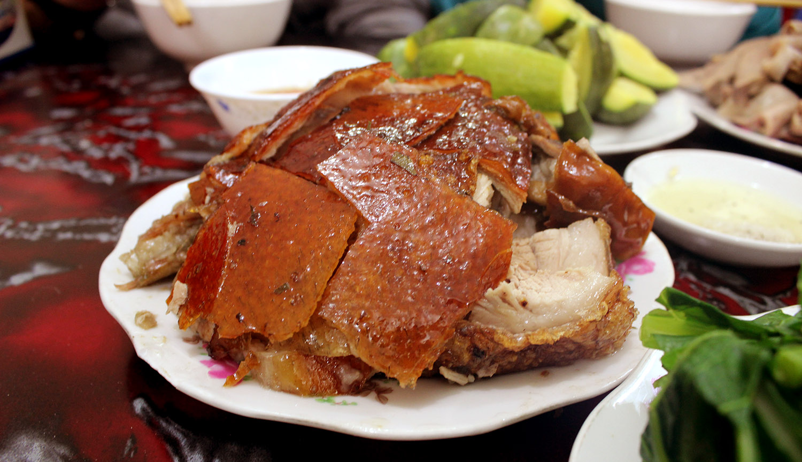
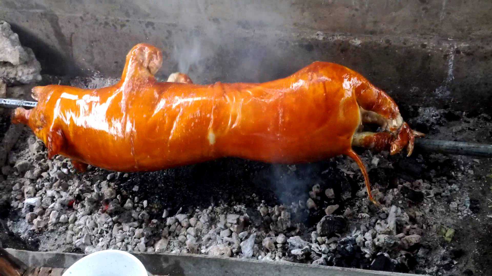

Giá : 120.000 VNĐ/đĩa
- Lợn mán quay được làm từ lợn mán Hà Giang, Hòa Bình, Sơn La, Điện Biên khi chín màu vàng tươi, bì giòn, thịt chắc và thơm, chấm với nước bên trong con lợn.
- Lợn mán sau khi làm sạch, ướp các gia vị như: Lá mác mật, chao, hàng khô, mật ong... khoảng 1 tiếng, rồi quay lợn trên than hồng. Thường thời gian để lợn quay chín khoảng 2-3 tiếng tùy thuộc con to hay nhỏ, quay lợn đến khi nào thấy vàng đều là được. Thông thường lợn quay hay dùng trong tiệc, cuối hỏi, lễ hội....
- Lợn hoàn toàn quay theo lợn quay Lạng Sơn, có mùi thơm đặc trưng là móc mật và một số gia vị, màu đỏ tự nhiến, miếng thịt khi chín mềm và rất ngọt.
